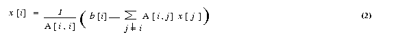
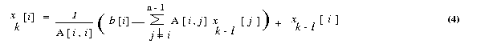

hyPACK-2013 : GPGPU OpenCL Prog. using AMD-APP
AMD Accelerated Parallel Processing (AMD APP) SOftware harnesses the tremendous processing power of GPUs for high-performance,
data-parallel computing in a wide range of applications. The AMD Accelerated Parallel Processing system
includes a software stack and the AMD GPUs.
AMD-APP SDK provides complete heterogeneous
OpenCL development platform for both the CPU and GPU.
AMD-APP OpenCL software development platform is available for x86-based CPUs and it provides complete heterogeneous
OpenCL development platform for both the CPU and GPU. Please refer to AMD APP Programming Guide OpenCL to
understand the relationship of the AMD Accelerated Parallel Processing components.
The techncial contents are developed using several technical reports, & Books and other
web sites as given in the References.
|
List of Programs
The
CLinfo
program uses the
clgetPlatformInfo()
and
clgetDeviceInfo()
commands print the detailed information about the OpenCL supported platforms and devices
in a system. Hardware details such as memory sizes and bus widts are available using these
commands. A snippet of the output from the CLinfo program is obtained using the command
$ ./CLInfo
Programs on Single GPU
|
Example 1.1
|
Write a simple OpenCL Program for multiplication of scalar value and a vector using global memory
(Using the keyword __global )
|
|
Example 1.2
|
Write a simple OpenCL Program for multiplication of scalar value and a Matrix using global memory
(Using the keyword __global )
|
|
Example 1.3
|
Write a OpenCL Program to compute vector vector addition using global memory
|
|
Example 1.4
|
Write a OpenCL Program to compute matrix matrix addition using global memory
|
|
Example 1.5
|
Write a OpencL program to find the total number of work-items in the x- and y-dimension of the
NDRanges (Assume that OpenCL kernel is launched with a two-dimensional (2D) NDRange.
Use API get_global_size(0),
get_global_size(1))
|
|
Example 1.6
|
Write a OpenCL program to device a query that returns the constant memory size supported by the device
|
|
Example 1.7
|
Write a OpenCL program to get unique global index of each work item that calls the function
get_global_id(0)
of
OpenCL API.
|
|
Example 1.8
|
Write OpenCL program to compute the value of pie
|
|
Example 1.9
|
Write a OpenCL Program to find prefix sum of an array using global memory
|
|
Example 1.10
|
Write a OpenCL Program to perform vector - vector multiplication using global memory
|
|
Example 1.11
|
Write a OpenCL Program to compute infinity norm of a real squre matrix using global memory
|
|
Example 1.12
|
Write a OpenCL Program to compute tranpose of a square matrix using global memory & local memory
|
|
Example 1.13
|
Write a OpenCL Program to compute matrix into vector multiplication using global & local memory
|
|
Example 1.14
|
Write a OpenCL Program to compute matrix into matrix multiplication using global & local memory
|
|
Example 1.15
|
Write a OpenCL program to compute solve Ax=b Matrix System of linear equations based on
Jacobi method on Multi-GPUs using OpenCL.
( Assignment )
|
|
Example 1.16
|
Write OpenCL program to implement the solution of Matrix system of Linear Equations
[A]{x}={b}
by Conjugate Gradient (Iterative) Method). ( Assignment )
|
|
Example 1.17
|
Write a OpenCL program to compute sparse Matrix into vector multiplication
( Assignment )
|
| |
|
Programs on Multipe GPU
Example 1.18
|
Write a CUDA Program to compute vector - vector multiplication on Multi-GPU
|

|
Brief description of OpenCL Programs for Numerical (Matrix) Computations
|
- Objective
Write OpenCL program to calculate multiplication of scalar value and vector
- Description
We create a one-dimensional globalWorkSize array that is overlaid on vector.
The input vector using Single Precision/Double Precision input data are generated on
host-CPU and transfer the vector to device-GPU for scalar-vector multiplication.
In global memory,a simple kernel based on the 1- dimension indexspace of
workgroups is
generated in which work-item is given a unique ID within its workgroup.
- Each work-item performs multiplication of element of a vector with scalar using work item ID.
-
The choice of work-items in the code are given as
size_t globalWorkSize[3] = [128, 1,1];
& for generalisation, refer
table 1.2
The final resultant vector is generated on device and transferred to Host.
This code demonstrates the development of OpencL Kernel for simple computations.
It is to be notes that the performance may increase bu using local memory to cache
data that will be used multiple times by a work-item or multiple work-items in the
same workgroup. It is possible to achiev this with an explicit assignment from a
global memory pointer a a local memory pointer. Once a work-item completes its
execution, none of its state information or local memory storage is persistent.
Any results that need to be kept must be transferred to global memory.
Important Steps (Table 1.1) :
|
Steps
|
Description
|
|
1.
|
Memory allocation on host and Input data Generation
Do memory allocation on host-CPU
and fill with the single or double prcesion data.
|
|
2.
|
Set opencl execution environment :
Call the function setExeEnv which sets execution environment for opencl
which performs the following :
- Get Platform Information
- Get Device Information
- Create context for GPU-devices to be used
- Create program object.
- Build the program executable from the program source.
The function performs
(a). Discover & Initilaise the platforms;
(b). Discoer & Initialie the devices;
(c). Create a Context; and
(d). Create program object build the program executable
|
|
3.
|
Create command queue using
Using clCreateCommandQueue(*)
and associate it with the device you want to execute on.
|
|
4.
|
Create device bufffer
using
clCreateBuffer() API
that will contain the data from
the host-buffer.
|
|
5.
|
Write host-CPU data to device buffers
|
|
6.
|
Kernel Launch :
(a). Create kernel handle;
(b). Set kernel arguments;
(c). Configure work-item strcture (
Define global and local worksizes and launch kernel for execution on device-GPU); and
(d). Enqueue the kernel for execution
|
|
7.
|
Read the outpur Buffer to the host (Copy result from
Device-GPU to host-CPU :)
Use
clEnqueueReadBuffer() API.
|
|
8.
|
Check correctness of result on host-CPU
Perform computation on host-CPU and compare CPU and GPU results.
|
|
9.
|
Release OpenCL resources (Free the memory)
Free the memory of arrays allocated on host-CPU & device-GPU
|
Table 1.1
Important Steps (Table 1.2) :
Kernels & OpenCL Execution Model :
|
S.No.
|
Description
|
|
1.
|
Work-item
The unit of concurrent execution in OpenCL C is a work-item.
(For example, in typical fragment of the code, i.e. for loop data computations
of typical multi-theaded code, a map of a single iteration of the loop to a
work-item can be done.)
OpenCL runtime to generate as many work-items as elements in the
input and output arrays and allow the runtime to map those work-items to
the underlying hardware (CPU & GPU).
(Conceptually, this is very similar to the parallelism inherent in a functional
map operation or data parallel in for loop in a model such as
OpenMP.)
|
|
2.
|
Identification of Work-item
When a OpenCL device begins executing a kernel, it provides intrinsic
functions that allow a work-item to identify itself.
This can be achieved by calling
get_global_id(0) allows the programmer to make use of position of the current
work-item in the sample case to regain the loop counter.
|
|
3.
|
Execution in fine-grained work-items
(N-dimensional range
(NDRange)
OpenCL describes execution in fine-grained workitems and
can despatch vast number of work-items on architecture
with hardware for fine-grained threading. Scalability can be achieved
due to support of large number of work-items.
-
When a kernel is executed, the programmer specifies the number of
work-items that should be created as an n-dimensional range
(NDRange)
-
An NDRange is one-, two- or three-dimensional index space of
work-items
that will often map to the dimensions of either the input or the
output data.
-
The dimensions of the NDRange ae specified and an N-element array
of type
size_t, where N represents the number of dimenisons used
to describe work-items being created.
|
|
4.
|
Example
Assume that 1024 elements are taken in each vector. The size can
be specified as a one- , two- , or three- dimensional
vector. The host code to specify an ND Range for 1024 elements is follows :
size_t indexSpaceSize[3] = [1024, 1,1];
Most importantly, dividing the work-items of an NDRange into
smaller, equal sized workgroups as shown in Figure 1.
-
An Index
space with N dimensions requires workgroups to be specified using N dimensions,
thus, a threee -dimensional requires three-dimensional workgroups.
|
|
5.
|
Example :
Perform Barrier Operations & synchronization
work-tems within a workgroup can peform barrier
operations to synchronize and they have access to a shared memory address space
Because workgroups sizes are fixed, this communication does not have
have a need to scale and hence does not affect scalability of a large
concurrent dispatch.
For example 1.3, i.e., Vector Vector Addition, the workgroup
can be specified as
size_t workGroupSize[3] = [64, 1, 1];
If the total number of work-items per array is 1024, this results
in creating 16 work-groups (1024 work-items / 64
per workgroups.
Most importantly, OpenCL requires that the index space sizes are evenely
divisible by the work-group sizes in each dimension.
For hardware efficiency, the workgroup size is usually fixed
to a favourable size, and we round up the index space size in each
dimension to satisfy this divisibility requirement.
-
In the kernel code, user can specify that exta work-items in
each dimension simply return immediately without outputting any data.
-
Many highly data paralle computations in which access of memory for
arrays that peforms computation (example Vector-Vector Addition), the
OpenCL allows the local workgroup size to be ignoed by
the programmer and generated automatically by the implementation ; in this
case; the dveloper will pass NULL instead.
|
Table 1.2
-
Input
Scalar value and size of the vector
-
Output
Execution time in seconds ,Gflops achieved
|
- Objective
Write OpenCL program to calculate multiplication of scalar value and Matrixc
- Description
We create a one-dimensional globalWorkSize array that is overlaid on matrix.
The input matrix using Single Precision/Double Precision input
data are generated on Host-CPU and transfer the matrix to device-GPU for
scalar-matrix multiplication. In global memory,each work-item is assigned a row from matrix
and it will multiply that row with scalar value. Final resultant
matrix is generated on device and transferred to Host.
Refer Table 1.1 for OpenCL Important implementation Steps
- Each work-item is assigned a row from matrix and it will multiply that row with scalar value.
-
The choice of work-items in the code are given as
size_t globalWorkSize[3] = [128, 1,1];
& for generalisation, refer
table 1.2
-
Input
Scalar value and size of the matrix
-
Output
Execution time in seconds, Gflops achieved
|
- Objective
Write OpenCL program to compute addition of two vectors
- Description
We create a one-dimensional globalWorkSize array that is overlaid on vector.
The input vectors using Single Precision/Double Precision input data
are generated on Host and transfer the vectors to device for vector
addition. In global memory,a simple kernel based on the N- dimension
grid of work groups is generated in which work item is given a unique
ID within its work group. Each work item performs addition of two vectors
using work item ID and the final resultant vector is generated on device
and transferred to Host.
Refer Table 1.1 for OpenCL Important implementation Steps
-
Input
Two vectors of same size
-
Output
Execution time in seconds ,Gflops achieved
|
- Objective
Write OpenCL program to compute addition of two Matrices
- Description
We create a two-dimensional globalWorkSize array that is overlaid on matrices.
The input matrices using Single Precision/Double Precision input data
are generated on Host-CPU and transfer the matrices to devic-GPUe for matrix
addition. In global memory,a simple kernel based on the 2- dimension
indexspace of work groups is generated in which work item is given a unique
ID within its work group. Each work item performs addition of two matrices
using work item ID and the final resultant matrix is generated on device
and transferred to Host.
Refer Table 1.1 for OpenCL Important implementation Steps
- Each work-item using its work item ID performs addition using one element from each matrix.
-
The choice of work-items in the code are given as
size_t globalWorkSize[3] = [128, 128,1];
& for generalisation, refer
table 1.2
-
Input
Matrix Size
-
Output
Execution time in seconds ,Gflops achieved
|
|
Example 1.5: |
Write a OpencL program to find the total number of work-items in the x- and y-dimension of the
NDRanges (Assume that OpenCL kernel is launched with a two-dimensional (2D) NDRange.
Use API get_global_size(0),
get_global_size(1))
(Assignment - To be discussed in Lab. Session)
|
|
Example 1.6: |
Write a OpenCL program to device a query that returns the constant memory size supported by the device
(Assignment - To be discussed in Lab. Session)
|
|
Example 1.7: |
Write a OpenCL program to get unique global index of each work item that calls the function
get_global_id(0)
of
OpenCL API.
(Assignment - To be discussed in Lab. Session)
|
- Objective
Write OpenCL Program to calculate value of PI using numerical integration method.
- Description
This program computes the value of PI over a given interval using Numerical
integration. The main work-item distributes the given interval uniformly over
the number of work-item on GPU device. Each work-item calculates its part of the
interval and finally work-item 0 will add up all the value calculated by individual
work-item. Every work-item do its part of calculation and put the final result in
a global array cell , which is allocated to this particular work-item only.
After execution of each work-item is over , work-item 0 is assigned the job
to gather all values and produce final result.
Refer Table 1.1 for OpenCL Important implementation Steps
- Each work-item calculates its part of the
interval and finally work-item 0 will add up all the value calculated by individual
work-item.
-
The choice of work-items in the code are given as
size_t globalWorkSize[3] = [128, 1,1];
& for generalisation, refer
table 1.2
- Input
Number intervals
- Output
pie value, Execution time in seconds
|
- Objective
Write OpenCL program to find prefix sum computations.
- Description
We create a one-dimensional globalWorkSize array that is overlaid on vector.
This is simple program which computes prefix sum of an given array element.
Prefix sum of an element of an array is defined by summation of all the
element processed this element and the current element. In global memory,
the input array using Single Precision input data is generated on Host and
the prefix sum kernel based on work item ID in a work group and 1-dimensional
index space of work groups. The output array is generated on the device and
transfer back to Host.
Refer Table 1.1 for OpenCL Important implementation Steps
- Each work-item performs summation of current element with previous element of an array using its work-item Id.
-
The choice of work-items in the code are given as
size_t globalWorkSize[3] = [128, 1,1];
& for generalisation, refer
table 1.2
- Input
Length of Input Array
- Output
Prefix Sum Of elements of Input Array
|
- Objective
Write OpenCL program to compute vector-vector multiplication
- Description
We create a one-dimensional globalWorkSize array that is overlaid on vector.
The input vectors using Single Precision/Double Precision input data are
generated on Host-CPU and transfer the vectors to device-GPU for vector multiplication.
In global memory, a simple kernel based on the 1- dimension index space of work
groups is generated in which work item is given a unique ID within its
work group. Each work item performs partial multiplication of two
vectors and the final resultant value is generated on device
and transferred to Host-CPU.
Refer Table 1.1 for OpenCL Important implementation Steps
- Each work-item calculates its part of the multiplication and finally work-item 0 will add up all the value calculated by individual work-item.
-
The choice of work-items in the code are given as
size_t globalWorkSize[3] = [128, 1,1];
& for generalisation, refer
table 1.2
- Input
Size of Input vectors
- Output
Execution time in seconds ,Gflops achieved
|
- Objective
Write OpenCL Program to find Infinity Norm of a matrix
- Description
We create a one-dimensional globalWorkSize array that is overlaid on matrices.
Infinity Norm of a Matrix: The row-Wise infinity norm of a matrix is defined
to be the maximum of sums of absolute values of elements in a row, over all rows.
The input matrix using Single Precision/Double Precision input data are generated
on Host and transfer the matrix to device for calculating infinity norm of
matrix. After the initial validity checks, each work-item is assigned a row
using its id and it will calculate sum of its assigned row. After all
calculations ,The work-item 0 will find out maximum sum among all sum of
all element of every row.
Refer Table 1.1 for OpenCL Important implementation Steps
- Each work-item is assigned a row
using its id and it will calculate sum of its assigned row. After all
calculations ,The thread 0 will find out maximum sum among all sum of
all element of every row.
-
The choice of work-items in the code are given as
size_t globalWorkSize[3] = [128, 1,1];
& for generalisation, refer
table 1.2
- Input
Size of the input Matrix
- Output
Execution time in seconds ,Gflops achieved
|
- Objective
Write OpenCL program to compute transpose of a matrix using row-wise distribution.
- Description
We create a two-dimensional globalWorkSize array that is overlaid on matrices.
The input matrix using Single Precision input data is generated on the Host-CPU
and transfer to device-GPU. In global memory implementation,a simple kernel
function is written on device-GPU which generates the output matrix on the device-GPU
and transfer back to Host-CPU. In local memory implementation , the kernel
computes the resulting matrix using multiple iterations. In each iteration,
one workgroup is loads one tile of both matrices from global memory to
local memory. After all iterations is done, the work group stores the
transposed matrix tile into the global resultant matrix. The resultant
matrix is transferred to Host-CPU.
Refer Table 1.1 for OpenCL Important implementation Steps
-
The choice of work-items in the code are given as
size_t globalWorkSize[3] = [128, 128,1];
& for generalisation, refer
table 1.2
- Input
Size of matrix
- Output
Execution time in seconds
|
- Objective
Write a OpenCL Program to perform Matrix into Vector multiplication.
- Description
We create a one-dimensional globalWorkSize array that is overlaid on matrice and vector.
Input matrix and the vector using Single Precision/Double Precision input data are
generated on the Host-CPU. A simple kernel based on the 1-dimension indexspace of work
groups is generated in which work item is given a unique ID within its work
group. In global memory each work item reads one row of the matrix and performs
computation with column of the vector to obtain resultant vector on device-GPU.
While in local memory, the resultant vector is calculated in multiple iterations.
In each iteration , one workgroup handles some rows of the matrix and each work
item from work group reads the row of matrix and perform computation with vector
and calculate the partial dot product..This partial dot product is stored into
local memory. The first work item with in workgroup computes the final result
by adding up all the partial dot products. The resultant vector is transferred
back to Host-CPU.
Refer Table 1.1 for OpenCL Important implementation Steps
- Each work-item reads the row of matrix and perform computation with vector element
and calculate the partial dot product. Work-item 0 computes the final result
by adding up all the partial dot products.
-
The choice of work-items in the code are given as
size_t globalWorkSize[3] = [128, 1,1];
& for generalisation, refer
table 1.2
- Input
Matrix Size
- Output
Execution time in seconds ,Gflops achieved
|
- Objective
Write a OpenCL Program to perform Matrix Matrix multiplication.
- Description
We create a two-dimensional globalWorkSize array that is overlaid on matrices. In the global memory implementation,
each work item reads one row from matrix and perform computation with one column of another matrix and compute the
corresponding element of resultant matrix. While in local memory implementation, Matrices have been divided into
work-groups of 16 x 16 sizes. One work-group loads one tile of both matrices from global memory to shared memory.
Each work-item with in work-group calculate temporal resultant in the local memory. After all work-items within work-group completed their part of computation, the work-group stores the resultant tile into the global resultant matrix.
Refer Table 1.1 for OpenCL Important implementation Steps
- Each work-item reads one row from matrix and perform computation with one column of another matrix and compute the corresponding element of resultant matrix.
-
The choice of work-items in the code are given as
size_t globalWorkSize[3] = [128, 128,1];
& for generalisation, refer
table 1.2
- Input
Matrix Size
- Output
Execution time in seconds ,Gflops achieved
|
Example 1.15:
|
Write a OpenCL Program for implement solution of matrix system of linear equations
[A]{x} = {b} by Jacobi method.
|
- Objective
Write a OpenCL program, for solving system of linear equations [A]{x} = {b} using Jacobi method
- Description
The Jacobi iterative method is one of the simplest iterative techniques to solve system of linear equations.
The ith equation of a system of linear equations [A]{x}={b} is
If all the diagonal elements of A are nonzero (or are made nonzero
by permuting the rows and columns of A), we can rewrite equation (1)

The Jacobi method starts with an initial guess x0 for
the solution vector x. This initial vector x0
is used in the right-hand side of equation (2) to arrive at the next approximation
x1 to the solution vector. The vector x1
is then used in the right hand side of equation (2), and the process continues
until a close enough approximation to the actual solution is found. A typical
iteration step in the Jacobi method is
We now express the iteration step of equation 3 in terms of residual rk.
Equation (3) can be rewritten as

Each process computes n/p values of the vector x in each iteration. These values are
gathered by all the processes and each process tests for convergence. If the values have been
computed up-to a certain accuracy the iterations are stopped otherwise the processes use
these values in the next iterations to compute a new set of values.
- Input
Input Matrix A and Initial Solution Vector x
Output
solution of matrix system Ax = b
|
Example 1.16:
|
Write a OpenCL Program for implement solution of matrix system of linear equations
[A]{x} = {b} by Conjugate Gradient method.
|
- Objective
OpenCLimplementation for Conjugate Gradient Method to solve the system of
linear equations [A]{x}={b}. Assume that A is symmetric positive definite matrix.
- Description
Description of conjugate gradient method :
The conjugate gradient (CG) method is an example of minimizing
method. A real n x n matrix A is positive definite if xT A x > {0}
for any n x 1 real, nonzero vector x. For a symmetric positive definite matrix A,
the unique vector x that minimizes the quadratic functional
f(x) = (1/2)xTAx-xTb
is the solution to the system Ax = b, here x and b
are n x 1 vectors. It is not particularly relevant
when n is very large, since the conjugating time for that number of iterations
is usually prohibitive and the property does not hold in presence of rounding
errors. The reason is that the gradient of functional f (x) is
Ax - b, which is zero when f (x) is
minimum. The gradient of a function is a n x 1 vector. We explain
some important steps in the algorithm. An iteration of a minimization method
is of the form
xk+1 = xk
+ taukdk
(1)
where tauk is a scalar step size and dkis
the direction vector, dk is a descent direction for f
at x. We now consider the problem of determining tauk,
given xk and dk, so that f(x)
is minimized on the line x = xk + tauk
dk, for tauk. The function f(xk+
tau dk) is quadratic in tau, and its minimization
leads to the condition
tau k = gkTgk
/ dkTAdk ,
(2)
where gk=Axk - b is
the gradient (residue) vector after k iterations. The residual
need not be computed explicitly in each iteration because it can be computed
incrementally by using its value from the previous iteration. In the (k+1)th
iteration, the residual gk+1 can be expressed
as follows:
gk+1 = Axk+1
- b
= A(xk+ tauk
dk) - b
= Axk- b + tauk
Adk
= gk + tauk Adk
(3)
Thus, the only matrix-vector product computed in each iteration is Adk,
which is already required to compute tauk in the
equation (2). If A is a symmetric positive definite matrix and d1,
d2,..., dn are direction vectors
that are conjugate with respect to A (that is, diT
Adj=0 for all 0<n, j<=n, i!=j),
then xk+1 in the Equation (1) converges to the solution
of Ax = bin at most n
iterations, assuming no rounding errors.
In practice, however, the number of iterations that yields an acceptable approximation to the solution is
much smaller than n. It also makes the gradient
at xk+1 orthogonal to search direction, i.e dkT
gk+1 = 0. Now we suppose that the search directions
are determined by an iteration of the form
dk+1 = -gk+1+ betak
dk (4)
where d0 = -g0 and beta0,
beta1 , ...... remain to be determined. We find the new search
direction in the plane spanned by the gradient at the most recent
point and previous search direction. The parameter betak+1is determined by following
equation
Betak+1 = gTk+1Adk/
dTkAdk (5)
and, one can derive orthogonality relations
gTkg l= 0 (l !=
k);
dTkAdl = 0 (l !=k)
The derivation of the above equation (5) and orthogonality relations
is beyond the scope of this document. For details please refer [ ]. Using
equation (3) and orthogonality relations, the equation (5) can be
further reduced to
Betak+1 = gTk+1gk+1/
gTkgk< (6)
The above equations (1) to (6) lead to CG algorithm. The algorithm
terminates when the square of the Euclidean vector norm of gradient (residual)
falls below a predetermined tolerance value. Although all of the
versions of the conjugate gradient method obtained by combining the formulas
for gk, Betak, and tauk
in various ways are mathematically equivalent, their computer implementation
is not. The following version is compared with respect to computational
labor, storage requirements, and accuracy. The following sequence of steps
are widely accepted.
1. tau k =
gkTgk /
dkTAdk
2. xk+1 =
xk + tauk dk
3. gk+1 =
gk + tauk Adk
4. Betak+1 = gTk+1gk+1/
gTkgk
5. dk+1 = -gk+1 +
Betak dk
where k = 0, 1, 2, .......... Initially we choose x0,
calculate g0 = Ax0 - b , and put d0= -g0.
The computer implementation of this algorithm is explained as follows :
void CongugateGradient(float
x0 [ ], float b [ ], float d)
{
float g, Delta0, Delta1, beta;
float temp, tau;
int iteration;
iteration = 0;
x = x0;
g = b;
g = A x - g;
Delta0 = gT * g;
if ( Delta0 <= EPSILON)
return;
d = -g;
do {
iteration = iteration + 1;
temp = A * d;
tau = Delta0 / dT * temp;
x = x + tau * d;
g = g + tau * temp;
Delta1 = gT * g;
if ( Delta1 <= EPSILON )
break;
beta = Delta1 / Delta0;
Delta0 = Delta1;
d = -g + beta * d;
}
while(Delta0 > EPSILON && Iteration < MAX_ITERATIONS);
return;
Regarding one-dimensional arrays of size n x 1 are required for
temp, g, x, d. The storage requirement for matrix. A is depends upon the structure
( dense, band, sparse ) of the matrix.The two dimensional n x n array is the
simplest structure to store matrix A. For large sparse matrix A this structure wastes a large amount
of storage space, for such matrix A suitable storage scheme should be
used.
-
The preconditioned conjugate gradient algorithm
Let C be a positive definite matrix factored in the form C = E ET,
and let the quadratic functional
f(x) = (1/2)xTAx - xTb + C ,
We define second quadratic functional g(y) by the transformation y = ETx,
g(x) = g(E-Ty) = (1/2)yTA*y
- yTb * + C*
where A * = E-1AE-T, b* =
E-1b, C* = C.
Here, A* is symmetric and positive definite. The similarity transformation
E-TA*ET = E-TE-1A
= C-1A
reveals that A* and A have same eigen values. If C can be found
such that the condition number of the matrix A* is less than
the condition number of the matrix A, then the rate of convergence of the
preconditioned method is better than that of conjugate gradient method.
We call C the preconditioning matrix, A* the preconditioned
matrix, We assume that the matrix C = EET is positive definite,
since E is nonsingular by assumption. If the coefficient matrix A has l
distinct eigen values, the CG algorithm converges to the solution
of the system Ax = b in at most l iterations
(assuming no rounding errors). Therefore, if A has many distinct eigen
values that vary widely in magnitude, the CG algorithm may require a large
number of iterations to converge to an acceptable approximation to the
solution.
The speed of convergence of the CG algorithm can be increased
by preconditioning A with the congruence transformation A*
= E-1AE-T where E is a nonsingular
matrix. E is chosen such that A* has fewer distinct eigen values
than A. The CG algorithm is then used to solve A* y =b*,
where x =(ET)-1y . The resulting
algorithm is called the preconditioned conjugate gradient (PCG)
algorithm. The step performed in each iteration of the preconditioned
conjugate gradient algorithm are as follows
1. tau k =
gkThk /
dkTAdk
2. xk+1
= xk + tauk dk
3. gk+1 =
gk + tauk Adk
4. hk+1 =
C-1gk+1
5. &nsbp; betak+1 = gTk+1hk+1/
gTkhk
6. dk+1 =
-hk+1 + betak+1dk
where k = 0, 1, 2, .......... Initially we choose x0,
calculate g0 = Ax0 - b, h0=
C-1g0 and d0 = -h0.
The multiplication by C-1 in step (4) is to be interpreted as solving a system of equations
with coefficient matrix C. A source of preconditioning matrices is the class
of stationary iterative methods for solving the system
Ax* = b.
- Parallel implementations of the PCG algorithm
The parallel conjugate gradient algorithm involves the following
type of computations and communications
Partitioning of a matrix : The matrix A is obtained by discretization
of partial differential equations by finite element, or finite difference
method. In such cases, the matrix is either sparse or banded. Consequently,
the partition of the matrix onto p processes play a vital
role for performance. For, simplicity , we assume that A is symmetric
positive definite and is row-wise block-striped partitioned.
Scalar Multiplication of a vector and addition of vectors :
Each of these computations can be performed sequentially regardless
of the preconditioner and the type of coefficient matrix. If all vectors
are distributed identically among the processes, these steps require no
communication in a parallel implementation.
Vector inner products :
In some situations, partial vectors are available on each processes.
MPI Collective library calls are necessary to perform vector inner products
If the parallel computer supports fast reduction operations, such as optimized
MPI, then the communication time for the inner-product calculations can
be made minimum.
Matrix-vector multiplication :
The computation and the communication cost of the matrix-vector
multiplication; depends on the structure of the matrix A. The
parallel implementation of the PCG algorithm for three cases one
in which A is a block-tridiagonal matrix of the type, two in
which it is banded unstructured sparse matrix, and three in which the matrix
is sparse give different performance on parallel computers. Various
parts of the algorithm in each of the three cases dominate in terms of
communication overheads.
Solving the preconditioned system :
The PCG algorithm solves system of linear equations in each
iteration The preconditioner C is chosen so that solving the system modified
system is in expensive compared to solving the original system of
equations Ax = b. Nevertheless, preconditioning increases
the amount of computation in each iteration. For good preconditioners,
however, the increase is compensated by a reduction in the number of iterations
required to achieve acceptable convergence. The computation and the
communication requirements of this step depends on the type
of preconditioner used. preconditioning method such as diagonal preconditioning,
in which the preconditioning matrix C has nonzero elements only
along the principle diagonal does not involve any communication Also,
Incomplete Cholesky (IC) preconditioning, in which C is based on incomplete
Cholesky factorization of A and it may involve different computations and
communications in parallel implementation.
The convergence of CG method iterations performed by checking the error
criteria i.e. euclidean norm of the residual vector should be less than
prescribed tolerance. This convergence check involves gathering of real
value from all processes, which may be very costly operation.
We consider parallel implementations of the PCG algorithm using
diagonal preconditioner for dense coefficient matrix type. As we
will see, if C is a diagonal preconditioner, then solving the modified
system does not require any interprocessor communication. Hence,
the communication time in a CG iteration with diagonal preconditioning
is the same as that in an iteration of the unpreconditioned algorithm.
Thus the operations that involve any
communication overheads are computation of inner products, matrix-vector
multiplication and, in case of IC preconditioner solving the
system.
- Input
Row and Column in input Matrix
- Output
prints the results of the solution x of linear system of matrix equations Ax = b
|
|
Example 1.17: |
Write a OpenCL program to perform sparse matrix into vector multiplication
(Assignment - To be discussed in Lab. Session)
|
- Objective
To write a CUDA program on sparse matrix multiplication of size n x n and vector of size n.
-
Efficient storage format for sparse matrix
Dense matrices are stored in the computer memory by using two-dimensional arrays. For example,
a matrix with n rows and m columns, is stored using a n x m array of real numbers. However, using the same two-dimensional
array to store sparse matrices has two very important drawbacks. First, since most of the entries in the sparse matrix
are zero, this storage scheme wastes a lot of memory. Second, computations involving sparse matrices often need to operate only
on the non-zero entries of the matrix. Use of dense storage format makes it harder to locate these non-zero entries. For these
reasons sparse matrices are stored using different data structures.
The Compressed Row Storage format (CRS) is a widely used scheme for storing sparse matrices. In the CRS format, a
sparse matrix A with n rows having k non-zero entries is stored using three arrays: two integer arrays rowptr and colind,
and one array of real entries values. The array rowptr is of size n+1, and the other two arrays are each of size k. The
array colind stores the column indices of the non-zero entries in A, and the array values stores the corresponding non-zero
entries. In particular, the array colind stores the column-indices of the first row followed by the column-indices of the
second row followed by the column-indices of the third row, and so on. The array rowptr is used to determine where the storage of the
different rows starts and ends in the array colind and values. In particular, the column-indices of row i are stored starting at colind [rowptr[i]]
and ending at (but not including) colind [rowptr[i+1] ]. Similarly, the values of the non-zero entries of row i are stored at values [rowptr[i] ]
and ending at (but not including) values [rowptr[i+1] ].
Also note that the number of non-zero entries of row i is simply rowptr[i+1]-rowptr[i].
-
Serial sparse matrix vector multiplication
The following function performs a sparse matrix-vector multiplication [y]={A} {b}
where the sparse matrix A is of size n x m, the vector b is of size m and the vector
y is of size n. Note that the number of columns of A (i.e., m ) is not explicitly
specified as part of the input unless it is required.
void SerialSparseMatVec(int n, int *rowptr, int *colind, double *values
double *b, double *y)
{
int i, j, count ;
count = 0;
for(i=0; i<n; i++)
{
y[i] = 0.0;
for (j=rowptr[i]; j<rowptr[i+1]; j++)
y[i] += value [count] * b [colind[j]];
count ++;
}
}
- Description of parallel algorithm
In the parallel
implementation, each thread picks a row from the
matrix and multiplies it with the vector. Thus computation of all threads
is carried out in parallel.
-
Implementation
There are two implementations, one using OpenCL kernels and the other using BLAS library.
OpenCL implementation
Step 1: The matrix size(no. of rows) and sparsity(percentage of non-zero) are provided by the user in the cmd line.
Step 2: A sparse matrix and a vector of the given size are allocated and initialized. Also the row_ptr and
col_idx vectors are created and assigned their appropriate based on the sparse matrix
Step 3: The above vectors are also created and initialized on the device (GPU).
Step 4: The sparse_matrix and vector are multiplied in the GPU to obtain the result.
- Performance:
The gettimeofday() function which is part of sys/time.h is used to measure the time taken for computation.
- Input
The input to the problem is given as arguments in the command line. It should be given in the following format ;
Suppose that the number of rows of the sparse matrix is n (only square matrices are considered) and
the sparsity i.e. the percentage of number of zero's (given in the range 0 to 1) is m, then the program must be run as,
./program_name n m
CPU generates the sparse matrix, the vector to be multiplied using random values and the row_ptr and col_idx vectors based on the sparse matrix.
- Output
The CPU prints the time taken for the computation.
|
|
Example 1.18: |
Write a OpenCL program to compute vector-vector addition on Multi-GPU.
(Download source code - :
clMultiGPU-VectVectAdd.c
)
|
- Objective
Write OpenCL program to compute addition of two vectors
- Description
We create a one-dimensional globalWorkSize array that is overlaid on vector.
The input vectors using Single Precision/Double Precision input data
are generated on Host and transfer the vectors to device for vector
addition. Each GPU computes addition of its own elements of two vectors and
accumalates partial sum.
In global memory,a simple kernel based on the 1- dimension
indexspace of work groups is generated in which work item is given a unique
ID within its work group. Each work item performs addition of two vectors
using work item ID and the final resultant vector is generated on device
and transferred to Host.
Refer Table 1.1 for OpenCL Important implementation Steps
- Each work-item using its work item ID performs addition using one element from each vector.
-
The choice of work-items in the code are given as
size_t globalWorkSize[3] = [128, 1,1];
& for generalisation, refer table 1.2
The number of work-items of workgroup on each GPU are specified.
-
Input
Two vectors of same size
-
Output
Execution time in seconds, Gflops achieved
|
OpenCL CLInfo Program print-out :
|
Feature
|
Description
|
|
Number of Platforms :
|
1
|
|
Platform Profile :
|
FULL_PROFILE
|
|
Platform Version :
|
OpenCL 1.1 AMD-APP SDK-v2.4
|
|
Platform Name :
|
AMD Aceelerated Parallel Processing
|
|
Platform Vendor :
|
Advanced Micro Devices, In.,
|
|
No. of devices :
|
2
|
|
Device Type :
|
CL_DEVICE_TYPE_GPU
|
|
Name :
|
Cypress
|
|
Max compute units :
|
20
|
|
Address bits :
|
32
|
|
Max Memory allocations :
|
268435456
|
|
Global Memory size :
|
1073741824
|
|
Constant buffer size :
|
65536
|
|
Local Memory type :
|
Scaratchpad
|
|
Local Memory size :
|
32768
|
|
Device endianess:
|
Little
|
|
|
|
|
Device Type :
|
CL_DEVICE_TYPE_CPU
|
|
Max Compute units :
|
16
|
|
Max Compute units :
|
16
|
|
Name :
|
AMd Phenom (tm) 11 X4 X4 946 Processor
|
|
|
|
|